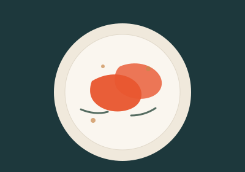
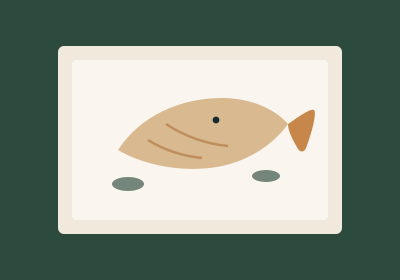

Crevetten vom Grill
Black Tiger aus den Mangroven Vietnams, naturbelassen und von Hand entdarmt. Nur Olivenöl, Knoblauch, Zitrone – mehr braucht es nicht.
Ein Haus mit Terrasse, ein Küchenteam mit Handschrift und ein See, der jeden Abend anders aussieht. Bei uns kommt auf den Teller, was der Markt hergibt.
Kein Schnickschnack, keine langen Karten. Wir kochen wenige Dinge, diese aber richtig.

Black Tiger aus den Mangroven Vietnams, naturbelassen und von Hand entdarmt. Nur Olivenöl, Knoblauch, Zitrone – mehr braucht es nicht.

Ganze Fische im Salzmantel, am Tisch tranchiert. Was wir bekommen, steht am Abend auf der Tafel neben dem Eingang.
Vierzig Plätze direkt am Wasser, ab dem ersten warmen Tag geöffnet. Reservieren lohnt sich – vor allem am Wochenende.
„Wir kaufen kleine Mengen, dafür jede Woche. Was nicht überzeugt, kommt nicht auf die Karte.“ Martina Hutter · Küchenchefin · Beispielzitat
Unsere Crevetten beziehen wir direkt beim Importeur. Rückverfolgbar bis zum Muttertier, ohne Antibiotika, ohne Zusatzstoffe. Das schmeckt man – und man kann es dem Gast erklären.
Gemüse und Kräuter kommen aus der Region, der Fisch vom Markt. Die Karte wechselt deshalb alle paar Wochen.
Für Tische ab sechs Personen und für die Terrasse empfehlen wir eine Reservation. Am einfachsten telefonisch – wir gehen fast immer ran.
Muster-Website von Swiss Prime Taste AG. „Restaurant Seeblick“ gibt es nicht – Adresse, Telefonnummer, Zeiten und Personen sind erfunden.